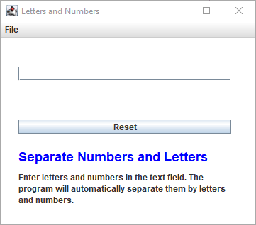

Letters vs Digits#
Key Points#
Character.isAlphabetic()#
The Character.isAlphabetic() method in Java is used to determine whether a specified character is an alphabet or not. It checks if the character has the characteristics of an alphabet according to the Unicode Standard. Here are the details:
Syntax: Java
public static boolean isAlphabetic(chr_var)
Parameters:
chr-var: The Unicode code point of the character to be tested.Return Value:
Returns
trueif the character is a Unicode alphabet character (i.e., an uppercase letter, lowercase letter, title case letter, modifier letter, other letter, or letter number). Otherwise, it returnsfalse.
Character.isDigit()#
The Character.isDigit() method in Java is used to determine whether a specified character is a digit or not. Let’s break it down:
Syntax: Java
public static boolean isDigit(char ch_var)
Parameters:
ch_var: The character to be tested.
Return Value:
Returns
trueif the character is a digit (0-9), andfalseotherwise.
Character.isLetter()#
The Character.isLetter() method in Java is used to determine whether a specified character is a letter or not. Let’s break it down:
Syntax: Java
public static boolean isLetter(ch_var)
AI-generated code. Review and use carefully. More info on FAQ.
Parameters:
ch_var: The character to be tested.
Return Value:
Returns
trueif the character is a letter (uppercase, lowercase, titlecase, modifier, or other letter), andfalseotherwise.
It’s important to note that
Character.isAlphabeticmight consider some characters as alphabetic that you wouldn’t typically consider letters in English. This is because it adheres to the broader Unicode definition of alphabetic characters. If you specifically want to check for characters that are common letters (a-z, A-Z), you might consider using theCharacter.isLettermethod instead, which has a slightly stricter definition of what constitutes a letter.

/*
Project: Menu
Programmer: James Goudy
Copyright: 2024
This program demonstrates how to programmically determines numbers and letters
*/
package j2x_55_lettersnumbers;
import java.awt.Color;
import java.awt.event.ActionEvent;
import java.awt.event.ActionListener;
import java.awt.event.InputEvent;
import java.awt.event.KeyEvent;
import java.awt.event.KeyListener;
import javax.swing.JButton;
import javax.swing.JFrame;
import javax.swing.JLabel;
import javax.swing.JMenu;
import javax.swing.JMenuBar;
import javax.swing.JMenuItem;
import javax.swing.JTextField;
import javax.swing.KeyStroke;
public class J2x_55_LettersNumbers {
/**
* @param args the command line arguments
*/
public static void main(String[] args) {
LettersNumbers myLN = new LettersNumbers();
}
}
class LettersNumbers {
JFrame myJFrame;
JTextField myTextField;
JLabel myLetters;
JLabel myExplain;
JLabel myNumbers;
JButton myReset;
JMenuBar mb = new JMenuBar();
JMenu mn_File = new JMenu();
JMenuItem mi_Quit = new JMenuItem();
public LettersNumbers() {
int xPos = 25;
int yPos = 15;
int myWidth = 300;
int myHeight = 25;
int myGap = 25;
float fsize = 12;
// Note that we can use HTML for text in a label
String purpose = """
<html>
<h2 style="color:blue;">Separate Numbers and Letters</h2>
<p>Enter letters and numbers in the text field.
The program will automatically separate them by
letters and numbers.
</p>
</html>
""";
// instatiate controls
myJFrame = new JFrame();
myTextField = new JTextField();
myLetters = new JLabel();
myNumbers = new JLabel();
myExplain = new JLabel();
myReset = new JButton();
// setup
setupMenu1(myJFrame, mb, null);
setUpTheJFrame(myJFrame, 375, 325, "Letters and Numbers",
Color.white, true);
setupTextFields(myJFrame, myTextField, xPos, yPos + (myGap * 1),
myWidth, fsize, "");
myTextField.addKeyListener(myKls);
setupLabel(myJFrame, myLetters, xPos, yPos + (myGap * 2), myWidth,
"", fsize);
setupLabel(myJFrame, myNumbers, xPos, yPos + (myGap * 3), myWidth,
"", fsize);
setupButton(myJFrame, myReset, xPos, yPos + (myGap * 4), myWidth,
"Reset", fsize, myAlsReset, myResetKls);
setupLabel(myJFrame, myExplain, xPos,
yPos + (myGap * 4), 500, purpose, 12);
// resize the box for the explanation
myExplain.setBounds(xPos, yPos + (myGap * 4), 300, 150);
myExplain.setText(purpose);
}
// Listeners
ActionListener myAlsReset = (ActionEvent e) -> {
// listener to reset
myLetters.setText("");
myNumbers.setText("");
myTextField.setText("");
};
KeyListener myKls = new KeyListener() {
@Override
public void keyTyped(KeyEvent e) {
}
@Override
public void keyPressed(KeyEvent e) {
SortLetters(e);
}
@Override
public void keyReleased(KeyEvent e) {
}
};
KeyListener myResetKls = new KeyListener() {
@Override
public void keyTyped(KeyEvent e) {
}
@Override
public void keyPressed(KeyEvent e) {
if (e.getKeyChar() == KeyEvent.VK_ENTER) {
myReset.doClick();
}
}
@Override
public void keyReleased(KeyEvent e) {
}
};
private void SortLetters(KeyEvent evt) {
String xnumbers;
String xletters;
xnumbers = myNumbers.getText();
xletters = myLetters.getText();
// Is it a number?
if (Character.isDigit(evt.getKeyChar())) {
xnumbers = xnumbers + evt.getKeyChar();
myNumbers.setText(xnumbers);
}
// Is it a letter?
if (Character.isAlphabetic(evt.getKeyChar())) {
xletters = xletters + evt.getKeyChar();
myLetters.setText(xletters);
}
// turn letters blue if an 'A' is depre
if (evt.getKeyChar() == KeyEvent.VK_A) {
myLetters.setForeground(Color.blue);
} else {
myLetters.setForeground(Color.black);
}
}
private void setUpTheJFrame(JFrame jf1,
int frameWidth, int frameHeight,
String frameTitle, Color frameColor,
boolean turnLayoutManagerOff) {
// Set the initial dimensions of the JFrame's window
jf1.setSize(frameWidth, frameHeight);
// Set the JFrame title
jf1.setTitle(frameTitle);
// Apply a custom background color to the content pane
// The content pane is the area where items are added to
// the frame
jf1.getContentPane().setBackground(frameColor);
// Make the JFrame visible on the screen,
// allowing users to interact with it
jf1.setVisible(true);
// Center the JFrame on the user's screen for optimal visibility
jf1.setLocationRelativeTo(null);
// Specify the program's termination behavior
// when the JFrame is closed
// Exit the program when the frame is closed
jf1.setDefaultCloseOperation(JFrame.EXIT_ON_CLOSE);
// Disable the default layout manager, allowing
// for manual component positioning
// Note: Manual layout can be more complex to manage
// disable the default layout manager
if (turnLayoutManagerOff) {
jf1.setLayout(null);
}
} //-----------------------------------------------------
private void setupLabel(JFrame jf1, JLabel lbl,
int xpos, int ypos, int lblWidth,
String theText, float labelSize) {
// Set the font size to 12 points
// NOTE: Have to do this before we add the text
lbl.setFont(lbl.getFont().deriveFont(labelSize));
// Set the preferred size of the label
lbl.setSize(lblWidth, (int) labelSize + 8);
// Set the text content of the label
lbl.setText(theText);
// Make the label visible
lbl.setVisible(true);
// Position the label at coordinates (10, 10) within the window
lbl.setLocation(xpos, ypos);
// Add the label to the window's content pane
jf1.add(lbl); // Assuming jf1 is the main window object
// Request the window to be redrawn, reflecting the added label
jf1.repaint();
}
private void setupTextFields(JFrame jf1, JTextField jtxt,
int xpos, int ypos, int tfLength, float fsize, String tfText) {
// Set the font size to 12 points
// NOTE: Have to do this before we add the text
jtxt.setFont(jtxt.getFont().deriveFont(12f));
// Set the preferred size of the label
jtxt.setSize(tfLength, (int) fsize + 8);
// Set the text content of the label
jtxt.setText(tfText);
// Make the label visible
jtxt.setVisible(true);
// Position the label at coordinates (10, 10) within the window
jtxt.setLocation(xpos, ypos);
// Add the label to the window's content pane
jf1.add(jtxt); // Assuming jf1 is the main window object
// Request the window to be redrawn, reflecting the added label
jf1.repaint();
}
private void setupButton(JFrame jf1, JButton bttnABttn,
int xpos, int ypos, int bttnWidth,
String bttnText, float fsize,
ActionListener acl, KeyListener keyls) {
// Set the font size to 12 points
// NOTE: Have to do this before we add the text
bttnABttn.setFont(bttnABttn.getFont().deriveFont(fsize));
// Set the preferred size of the label
bttnABttn.setSize(bttnWidth, (int) fsize + 8);
// Set the text content of the label
bttnABttn.setText(bttnText);
// Make the label visible
bttnABttn.setVisible(true);
// Position the label at coordinates (xpos, ypos) within the window
bttnABttn.setLocation(xpos, ypos);
// This action listener listens for the mouse click
bttnABttn.addActionListener(acl);
// This key listener is for listening for the keyboard actions
bttnABttn.addKeyListener(keyls);
// Add the label to the window's content pane
jf1.add(bttnABttn); // Assuming jf1 is the main window object
// Request the window to be redrawn, reflecting the added label
jf1.repaint();
}
// Make sure the menu is setup before the frame in the constructor
// Setup the File menu
private void setupMenu1(JFrame frm, JMenuBar mb, ActionListener acl) {
// Set the text for the first menu
mn_File.setText("File");
// add an ActionListener to each menuItem
// note that the program is calling an action listener
// mn_File.addSeparator();
// setup the quit menu item
mi_Quit.setText("Quit");
// set the ctrl-Q shortcut for quitting
mi_Quit.setAccelerator(KeyStroke.getKeyStroke(KeyEvent.VK_Q,
InputEvent.CTRL_DOWN_MASK));
// add an action listener to close down the program
mi_Quit.addActionListener(new ActionListener() {
@Override
public void actionPerformed(ActionEvent e) {
System.exit(0);
}
});
// add the Menu item to Menu
mn_File.add(mi_Quit);
// add the menu to the menubar
mb.add(mn_File);
// set the menubar to the form
frm.setJMenuBar(mb);
}
}